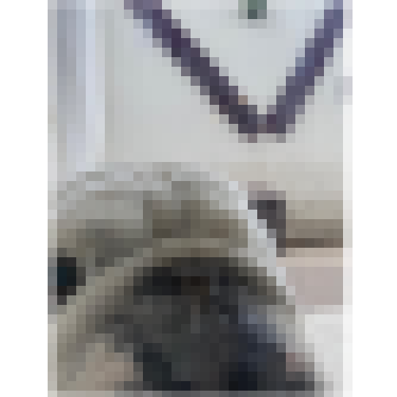
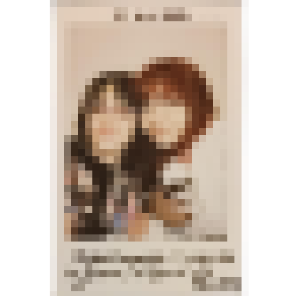
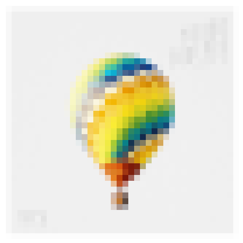
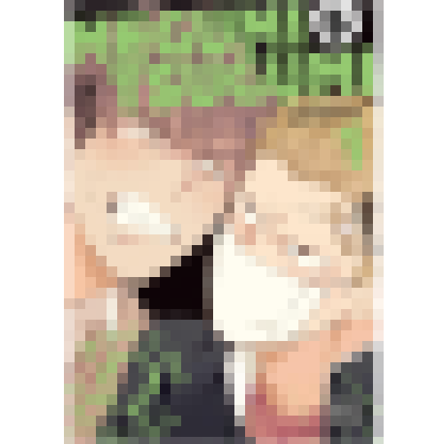
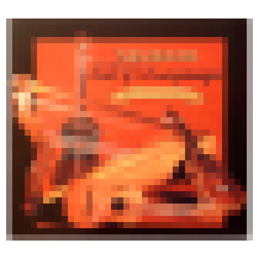
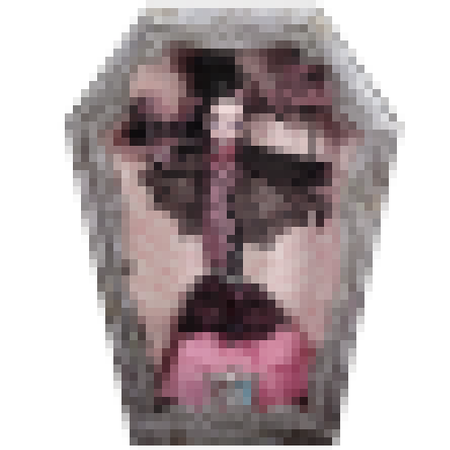
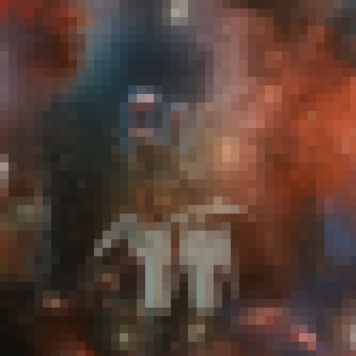

volver
volver

Clasificación: Evidencia testimonial.
Chinampa fue la primera bulldog de fuerzas especiales en México y, para Renata, verla en televisión la marcó. Hasta ese momento, siempre había pensado que únicamente perros grandes, fuertes y atléticos, como los pastores alemanes, podían desempeñar trabajos de rescate importantes. Por eso le impresionaba tanto ver a una bulldog inglés ocupando ese lugar, especialmente porque la mayoría de las personas asociaban esa raza con problemas respiratorios, poca resistencia física. Sin embargo, Chinampa parecía existir únicamente para demostrar que los estereotipos no son más que palabras. La noticia que la volvió famosa ocurrió después de un incendio en Hidalgo, cuando una casa quedó dividida por las llamas mientras dos niños seguían atrapados dentro de una habitación. Aunque los padres se encontraban en el lugar, el fuego les impedía cruzar hacia donde estaban sus hijos. Cuando llegaron los bomberos junto al equipo canino de rescate, Chinampa fue la primera en entrar entre el humo y los escombros.
Dentro de una pequeña habitación encontró a los dos hermanos abrazados en una esquina, la hermana mayor había intentado proteger al pequeño cubriéndolo con su propio cuerpo, pero había inhalado demasiado humo y ya no tenía pulso. Según contaron los rescatistas, Chinampa comenzó a ladrar desesperadamente para llamar la atención mientras intentaba separar a los niños, y después empezó a presionar el pecho de la niña con sus patas repetidamente, como si entendiera perfectamente que necesitaba mantener su corazón funcionando hasta que llegaran los paramédicos. Los bomberos lograron encontrarlos gracias a los ladridos constantes de la bulldog y sacaron inmediatamente a ambos niños para trasladarlos al hospital.
Contra todo pronóstico, la niña sobrevivió sin daño cerebral grave, y gran parte del mérito fue atribuido a Chinampa. La imagen de aquella bulldog de un solo ojo, respirando con dificultad y aun así arriesgando su propia vida para salvar a una niña, conmovió profundamente a todo el país. Le otorgaron medallas, reconocimientos y apareció incontables veces en televisión, pero lo que más impactó a Renata era la idea de que alguien considerado “no apto para el trabajo” hubiera terminado demostrando tener uno de los corazones más grandes del mundo.

Clasificación: Evidencia física.
Tras una fuerte tormenta en la bahía de Osaka, Salamanca, una joven obsesionada con encontrar tesoros piratas y objetos perdidos, decidió viajar a las costas de Kobe para bucear entre los restos que el mar solía arrastrar después de las tormentas. Había leído durante años en distintos fancafes y foros que, tras tormentas intensas, era común encontrar pertenencias antiguas, pequeñas reliquias o artículos desaparecidos que terminaban atrapados entre las rocas del fondo marino en esa área. Para probar su suerte, se adentro al mar equipada y con las protecciones correspondientes, explorando entre pedazos de madera, botellas desgastadas y fragmentos oxidados arrastrados por la corriente. Después de varios minutos encontró una bolsa de plástico atorada entre rocas cerca de la bahía. Dentro había un viejo álbum fotográfico apenas protegido, aunque la mayoría de las fotografías estaban dañadas, todavía podían distinguirse algunos rostros sonrientes, fechas escritas y pequeñas anotaciones casi borradas por el agua salada.
Las fotografías habían sido tomadas veintitrés años atrás y mostraban a una joven llamada Renata junto a su mejor amiga recorriendo distintas ciudades de España e Italia. Entre las páginas aparecían calles iluminadas por luces navideñas, boletos de tren, cafeterías pequeñas y recuerdos de lugares como Salamanca, Roma, Madrid y Astorga. Cada fotografía parecía capturar momentos simples pero importantes, comidas compartidas, paisajes nocturnos y sonrisas que transmitían una hermosa amistad. Salamanca continuó observando el álbum durante horas, sintiendo una extraña nostalgia por personas que jamás había conocido. En una de las últimas páginas encontró una fotografía parcialmente destruida donde todavía podía leerse una frase escrita con tinta deslavada: “23 Diciembre 2025 - Últimos momentos antes de despedirnos…”. Desde ese dia, Salamanca conservó el álbum, preguntándose constantemente cómo había terminado perdido en el mar y qué había ocurrido con aquellas dos jóvenes cuya felicidad era innegable con solo una fotografía.

Clasificación: Evidencia digital.
Debido al incremento de agotamiento y estrés dentro de distintas industrias , la empresa multimillonaria HAHMBITNA decidió realizar un experimento seleccionando a destacados profesionales de distintas áreas y someterlos a clases intensivas de baile. El objetivo central de este experimento consistía en identificar estrategias de aprendizaje capaces de estimular eficazmente la actividad cognitiva de sus colaboradores para nuevos métodos de concentración y manejo del estrés en el entorno laboral. Entre los seleccionados se encontraban un policía, un piloto de carreras, un piloto de aviación, un administrador de empresas, un médico, un detective y un botones de hotel, quienes fueron llevados a una enorme sala de ensayo monitoreada por investigadores. Desde el inicio, el ambiente estuvo marcado por una notable incomodidad, al estar un poco confundidos con las actividades del experimento el silencio comenzaba a volver la situación más confusa. Sin embargo, el botones, con una personalidad cálida y relajada, comenzó a hablar con los demás, logrando que poco a poco compartieran experiencias sobre el agotamiento y presión que vivían diariamente en sus trabajos. Aquella conversación transformó la tensión inicial en una sensación de compañerismo incluso antes de que empezara el experimento, facilitando la integración del grupo.
Con la llegada de los instructores, se hizo evidente que la mayoría de los asistentes se encontraba fuera de su zona de confort. Las coreografías eran rápidas, agotadoras y requerían una sincronización muy precisa que ninguno tenía. Cada miembro intentaba seguir las indicaciones para llevar a cabo los diferentes métodos, pero al avanzar las horas, el cansancio y frustración comenzaron a apoderarse de la sala, hasta que el piloto de carreras fue de los primeros en captar la energía y el ritmo de la coreografía,ejecutando los movimientos con precisión. Al notar el agotamiento decidió intervenir, guiándonos paso a paso con mucha paciencia hasta conseguir que todos se movieran en sincronía. Su colaboración resultó clave para transformar la dinámica. Los investigadores descubrieron entonces que la concentración y estabilidad emocional de los participantes mejoraba únicamente cuando existía apoyo mutuo entre ellos. Cuando trabajaban como grupo, sus niveles de estrés disminuían considerablemente y su concentración aumentaba de manera inesperada. El experimento terminó siendo grabado y transmitido mundialmente bajo el nombre “DOPE”, convirtiéndose en un fenómeno. Años después, aquellas grabaciones seguían siendo vistas por millones de personas, especialmente por Renata, quien veía el experimento una y otra vez porque representaba todo lo que ella quería para el futuro, la gente apoyándose mutuamente en un mundo agotado y competitivo. Le fascinaba descubrir que, aún después de tantos años, los siete participantes continuaban en contacto, subiendo fotografías, videos y pequeños recuerdos de su vida juntos a redes sociales.

Clasificación: Evidencia física.
Durante años había visto lugares como ese únicamente a través de pantallas y relatos ajenos. Desde su rincón del mundo, le parecía imposible imaginar un espacio donde todas las cosas que amaba existieran sin restricciones, sin miradas incómodas y a precios mucho más accesibles que en su país. Por eso, cuando finalmente llegó a aquella ciudad, sintió que caminaba dentro de algo que durante mucho tiempo había considerado una fantasía. Aun así, la magnitud de posibilidades la abrumó, encontró tantos lugares, demasiadas recomendaciones y demasiadas posibilidades. Tras dudarlo más de lo que le habría gustado admitir, optó por una estrategia sencilla, una lista breve, el centro como punto de partida y la disposición de dejarse llevar. Subió al autobús con una emoción contenida, que al llegar a su destino y bajar del transporte, chocó accidentalmente con una joven de cabello verde, provocando que varias bolsas y libros cayeran al suelo. Avergonzada, comenzó a ayudarla rápidamente hasta que algo llamó su atención entre las compras dispersas, doujinshis, exactamente el tipo de cosas que había viajado buscando. Aquella coincidencia le pareció tan absurda que, reuniendo valor, terminó preguntándole por recomendaciones de tiendas.
Lo que debía ser una conversación breve terminó convirtiéndose en horas de palabras compartidas La joven respondió con una amabilidad inesperada y ambas comenzaron a hablar con naturalidad, como si llevaran años conociéndose. Descubrieron gustos similares, historias favoritas e incluso pequeñas obsesiones idénticas relacionadas con colecciones, ilustradores y personajes. Decidieron continuar juntas el resto del día, entrando a tiendas raras y ocultas, revisando estanterías que parecían infinitas y encontrando objetos que parecían haber estado esperándolas específicamente a ellas. Sin embargo, lo verdaderamente memorable fue la compañía, la sensación de comprensión que surgió entre ambas. Por primera vez en mucho tiempo, podía hablar libremente sobre aquello que amaba sin sentirse juzgada. La joven no solo la escuchaba sin reservas, sino que comprendía su entusiasmo y lo reflejaba con la misma intensidad. Entre risas, recomendaciones y confesiones, aquel lugar desconocido dejó de sentirse extraño. Años después, al observar su colección de cómics acomodada cuidadosamente en su habitación, todavía recordaría aquel accidente como uno de los encuentros más improbables y especiales de su vida, especialmente porque, desde entonces, la joven de cabello verde jamás desapareció de su vida.
Clasificación: Evidencia física.
Desde que entró a la preparatoria, todos la relacionaban con el mismo objeto. Siempre estaba entre sus manos, dentro de su mochila o apoyado sobre cualquier mesa mientras pasaba horas dibujando. Un objeto que se había convertido en un refugio silencioso capaz de ayudarle a despejar la mente cuando los pensamientos se acumulaban demasiado o cuando la realidad comenzaba a sentirse abrumadora. Renata a través de aquella pantalla podía hacer cualquier cosa, crear universos completos, destruirlos, reinventar historias o unir personajes que jamás habían sido pensados para encontrarse. Lo que más disfrutaba era construir relaciones imposibles y darles una oportunidad distinta dentro de mundos creados completamente por ella. Muchas de esas ideas nacían de historias encontradas en internet, ilustraciones, y conversaciones ajenas, aunque otras surgían únicamente de su imaginación. Dibujar terminó convirtiéndose en algo esencial para ella, una forma de traducir emociones y pensamientos que difícilmente podía explicar con palabras.
Su universo favorito giraba alrededor de un joven rey y su caballero más leal. Después de la muerte inesperada del antiguo gobernante, el príncipe tuvo que ascender al trono antes de sentirse realmente preparado, convirtiéndose en un rey inseguro y constantemente abrumado por el peso del reino. Debido a su poca experiencia, el caballero principal terminó convirtiéndose en la persona en quien más confiaba, era quien lo guiaba durante reuniones importantes, calmaba sus dudas y permanecía a su lado incluso durante las noches de insomnio. Sin embargo, el apego del rey iba mucho más allá de la admiración o la dependencia. Había algo en el caballero que le recordaba profundamente a alguien importante que había perdido años atrás, una sensación cálida y dolorosa que lo hacía buscar constantemente su presencia. Por eso siempre encontraba excusas para llamarlo, pedirle consejos o simplemente mantenerlo cerca. Le pedía que se quitara el casco durante las conversaciones privadas, insistía en caminar junto a él por los jardines del castillo y desviaba la mirada hacia su rostro cada vez que creía que nadie estaba observando. Aunque el rey no entendía realmente lo que sentía, todos a su alrededor parecían darse cuenta antes que él.
Para el caballero, la situación era mucho más complicada. Había jurado dedicar su vida entera a proteger al rey y entendía perfectamente cuál era su lugar dentro del reino. Sin embargo, mientras más tiempo pasaban juntos, más difícil se volvía ignorar los sentimientos que comenzaban a crecer dentro de él. Intentó reprimirlos durante años, convencido de que amar al rey era algo egoísta e imposible, hasta que una noche terminó confesándolo todo mientras ambos observaban la luna desde uno de los balcones del palacio. Las palabras salieron de forma torpe y desesperada, después de haber guardado sus sentimientos tanto tiempo. Fue entonces cuando el rey finalmente comprendió, había sido un idiota por no darse cuenta antes de que él también estaba enamorado. A pesar del riesgo que aquello representaba para la reputación de la corona y para las alianzas políticas del reino, el rey decidió ignorar todas las advertencias y le pidió matrimonio al caballero frente a toda la corte. Contra todo pronóstico, permanecieron juntos y gobernaron durante años.

Clasificación: Evidencia circunstancial.
Cuentan las historias que, cerca de Río Blanco en Veracruz, pueden escucharse risas de mujeres alrededor de las dos de la mañana, acompañadas a luces que surcan el cielo a gran velocidad. Según decía la bisabuela de Renata, aquellas criaturas rondaban las cantinas cercanas al río buscando hombres borrachos para absorberles el alma a cambio de poder. Las malas lenguas aseguraban que podían capturar decenas en una sola noche y que, para evitar sospechas, transformaban los cuerpos en objetos comunes antes de arrojarlos a la corriente. Por eso, algunas veces aparecían macetas, jarrones, calabazas o figuras extrañas flotando río abajo, mientras las autoridades insistían en que las desapariciones eran simples accidentes provocados por el alcohol. Nadie se atrevía realmente a investigar demasiado, después de todo, era más fácil aceptar una explicación lógica que admitir que algo descendía del cielo en mitad de la madrugada.
La bisabuela aseguraba haberse encontrado con una de aquellas criaturas cuando salió desesperadamente a buscar a su hijo, quien acostumbraba ignorar las advertencias y pasar las noches bebiendo cerca de las cantinas al lado del río. Mientras caminaba junto al río, las luces comenzaron a aparecer sobre el cielo oscuro, pero ella no se inmutó, pues sabía que aquellas brujas preferían a los hombres como presa. Vio una de las luces descender lentamente montada sobre una escoba. Según contaba, jamás había visto algo tan hermoso y aterrador al mismo tiempo. El resplandor era tan intenso que apenas podía mantener los ojos abiertos sin sentir un fuerte dolor de cabeza, cubriéndose la cara con las manos para protegerse de la luz. Entonces escuchó un cuerpo caer al agua seguido de un grito de agonía que se perdió rápidamente entre el sonido del río, antes de que aquella figura brillante volviera a elevarse hacia la oscuridad. Aunque sabía que el grito no pertenecía a su hijo, corrió desesperada para encontrarlo, furiosa por su terquedad y aterrada por la posibilidad de llegar demasiado tarde. O al menos, esa era la historia que la abuela de Renata le contaba cada noche para obligarla a dormir temprano y mantenerse lejos de las ventanas después de las dos de la mañana cuando iba a visitar a su familia materna.

Clasificación: Evidencia física.
A finales de Noviembre de 2015, Miri llevaba semanas intentando encontrar el regalo perfecto para el cumpleaños número diecinueve de su mejor amiga, era una fecha inolvidable al estar al otro lado del mundo. Después de más de siete años de amistad, sentía que ningún objeto común podía representar todo lo que habían vivido juntas, así que pasó horas recorriendo distintos locales dentro de una enorme plaza comercial sin lograr convencerse de nada. Estaba a punto de rendirse cuando, al mirar de reojo un pequeño pasillo casi vacío, descubrió una tienda que juraba no haber visto nunca antes. En el aparador se exhibía un elegante vestido gótico victoriano adornado con delicadas telarañas negras que parecían moverse bajo las luces del lugar. Al entrar, Miri quedó completamente fascinada, ya que la tienda entera parecía diseñada específicamente para su amiga, llena de ropa oscura, muñecas antiguas, vitrinas color vino y decoración inspirada en monstruos clásicos. Sin pensarlo demasiado y con una sonrisa victoriosa, decidió comprar el vestido convencida de que aquel sería el regalo perfecto.
La noche de la fiesta, Miri se aseguro de envolver cuidadosamente el atuendo en una enorme caja negra, decorada con rosa pastel y moños brillantes. Mientras los invitados bailaban y disfrutaban de la música, ella apenas podía ocultar la emoción de ver la reacción de Renata. Cuando por fin llegó el momento de abrir los regalos, Renata retiró el papel lentamente hasta encontrarse con el vestido más hermoso que había visto. Sus ojos se llenaron de lágrimas casi de inmediato y terminó abrazando a Miri con tanta fuerza que ambas comenzaron a reír frente a todos los invitados. Para Renata, aquel vestido no solo se convirtió en su prenda favorita, sino también en un símbolo de una amistad que parecía destinada a durar siglos enteros. Con el paso del tiempo, el vestido terminó exhibido en el centro de su gigantesco armario como si fuera una reliquia, y cada vez que lo veía recordaba aquella noche como uno de los momentos más felices de su vida, especialmente porque, en un mundo donde las personas parecían desaparecer constantemente, ella y Miri seguían eligiéndose una y otra vez.

Clasificación: Evidencia biológica.
Ella nunca se había dado cuenta de cuánto le fascinaban realmente las estrellas hasta que conoció al profesor Anthony J. Desde pequeña había sentido una obsesión silenciosa por la luna, constantemente le pedía a su padre telescopios, binoculares o cualquier objeto que le permitiera observar de cerca. Pasaba horas mirando el cielo nocturno desde su ventana, aunque aquella fascinación nunca fue más allá de admirar el brillo y aprender algunas pocas constelaciones en la escuela. Todo cambió durante la universidad, cuando uno de sus profesores recomendó visitar un museo interactivo sobre astronomía en el que había colaborado diseñando algunas visuales para las exposiciones. Intrigada por la idea, Renata decidió asistir un fin de semana para dar un vistazo, pensando que solo era una exposición más. Sin embargo, también se realizaban conferencias impartidas por investigadores especializados, quienes hablaban directamente con el público sobre fenómenos astronómicos que se mostraban en la exposición. Aunque sabía que probablemente no entendería la mayoría de los conceptos científicos, por curiosidad decidió quedarse a escuchar una de las charlas principales.
Ese día, el encargado de la conferencia era Anthony J, un reconocido profesor de astrofísica y principal líder de investigación de la exposición, que parecía completamente enamorado del universo que estudiaba. Su conferencia giraba alrededor de la Nebulosa Cabeza de Caballo, proyectando enormes imágenes capturadas por la NASA donde los tonos rojizos, violetas y azules cubrían por completo las pantallas del auditorio creando una mezcla hermosa de colores. Pero lo que realmente impactó a Renata no fueron solo las fotografías, sino la manera en que el profesor hablaba de ellas, describía las nebulosas con tanta emoción y cercanía que parecía conocerlas personalmente, como si hubiera estado ahí observándolas nacer, como si él hubiera sido parte de su creación. Cada palabra transmitía una fascinación tan visceral que Renata terminó completamente absorbida por aquella conferencia. Desde entonces, la Nebulosa Cabeza de Caballo se convirtió en una especie de hogar creativo para ella. Siempre que sentía que perdía inspiración para alguno de sus proyectos, volvía a observar aquellas imágenes llenas de mil rojos cobrizos, carmesíes y violetas profundos, encontrando nuevamente la sensación de asombro que experimentó aquella tarde en la exposición. Con el tiempo, esos colores comenzaron a aparecer constantemente en sus trabajos, como si una pequeña parte de aquella nebulosa hubiera terminado viviendo dentro de todo lo que creaba, así como Anthony.